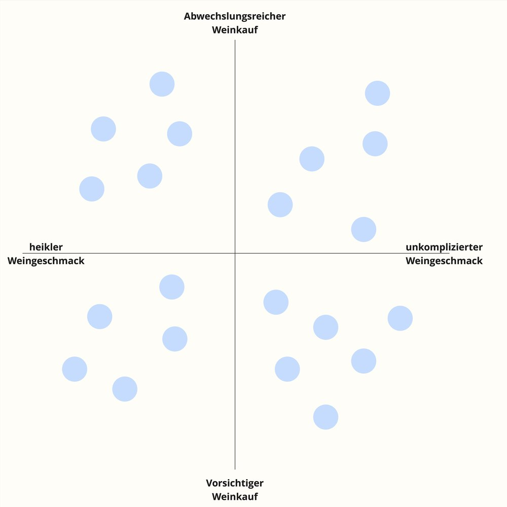
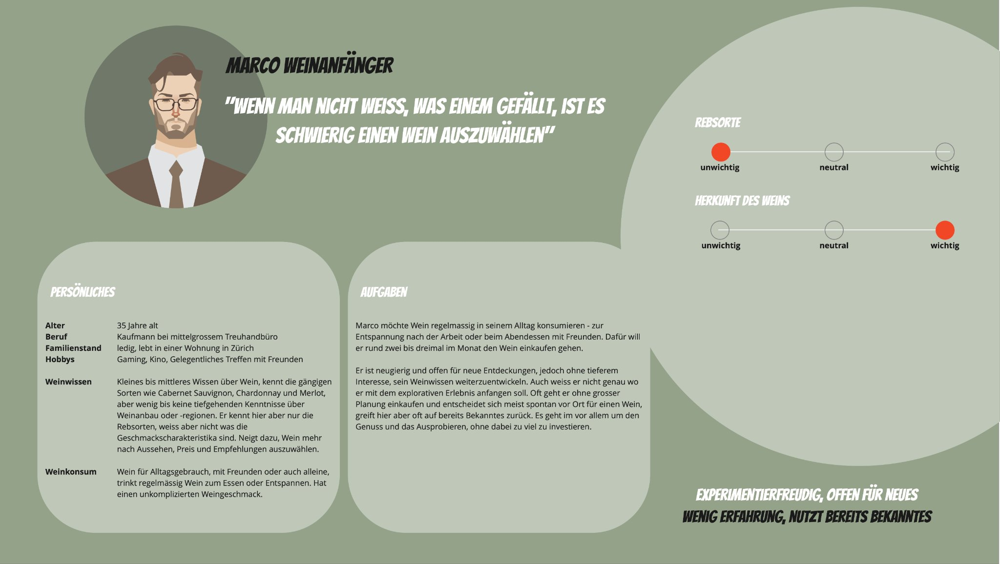
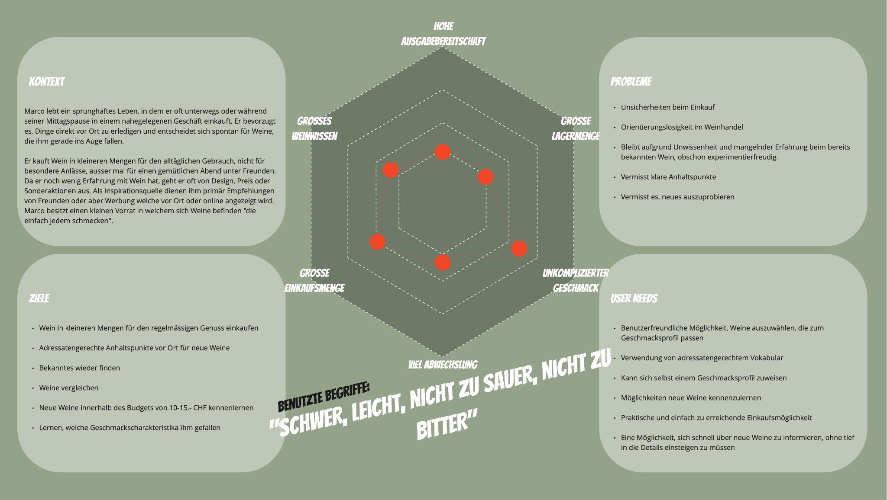

Generative research to wine consumption
Executive Summary
Knowledge about wine customers at the Denner wine shop was initially very limited. It was unclear what types of wine customers exist and how they make purchase decisions.
A generative research study with qualitative and quantitative methods brought clarity. It helped the team develop strategies to expand the wine buyer base and better meet customer needs.
My role:
- Project lead
- User research lead
My tasks:
- Research questions
- Planning and moderating interviews
- Coding and clustering data in Dovetail
- Identifying opportunity areas
- Setting up a quantitative survey for validation
- Developing personas
Methods used:
DISCOVER
Context and problem definition
Folgende Research questions standen im Zentrum:
- What are the most important wine personas for the Denner wine shop?
- How do customers decide on a particular wine?
Discover & Explore
Research phase
In the first iteration, I led with the team 21 semi-structured video interviews . Participants were recruited via a screener. Interviews were AI-transcribed and coded and categorized in Dovetail.
Synthesis revealed four core behavioral patterns identified:
- Picky taste with varied wine purchases
- Easy-going taste with varied wine purchases
- Picky taste with cautious wine purchases
- Easy-going taste with cautious wine purchases

Ergebnisse
Personas
In a second iteration, a quantitative survey validated the qualitative insights. Responses were mapped to personas and analyzed statistically.
- Marco – wine novice
- Markus – wine connoisseur
- Sophie – occasion drinker
- Regula – everyday drinker
From this, I discussed opportunity areas with the team.

